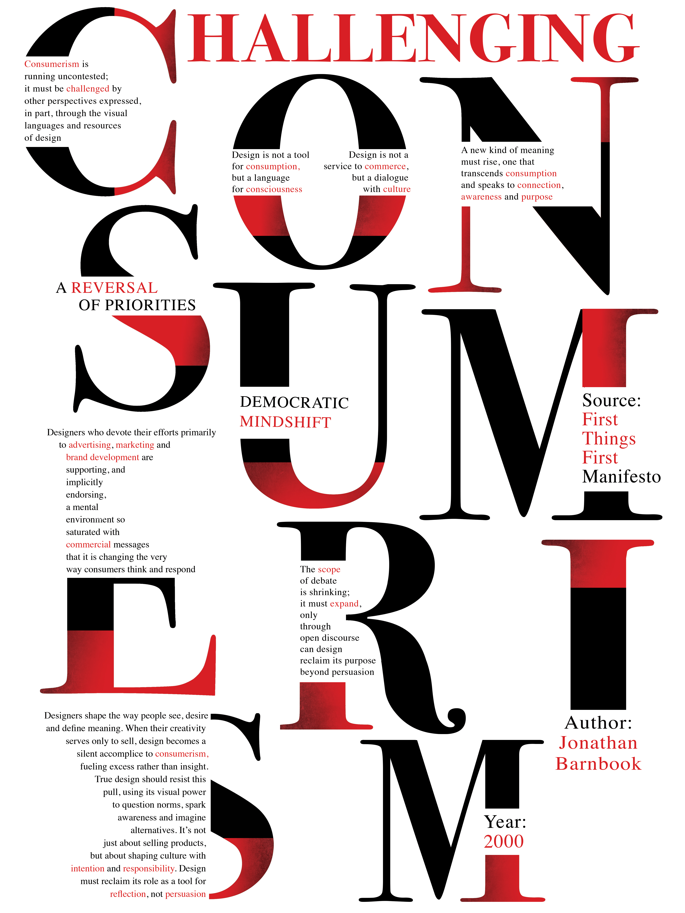
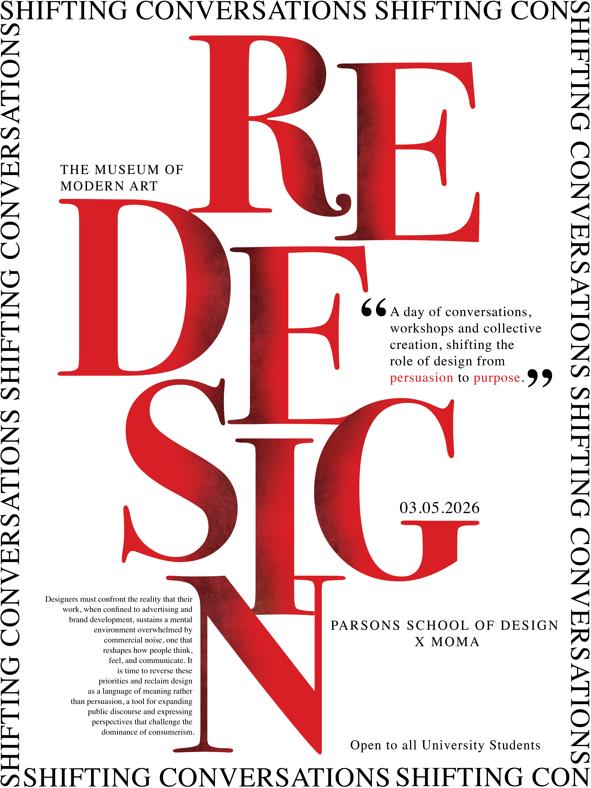
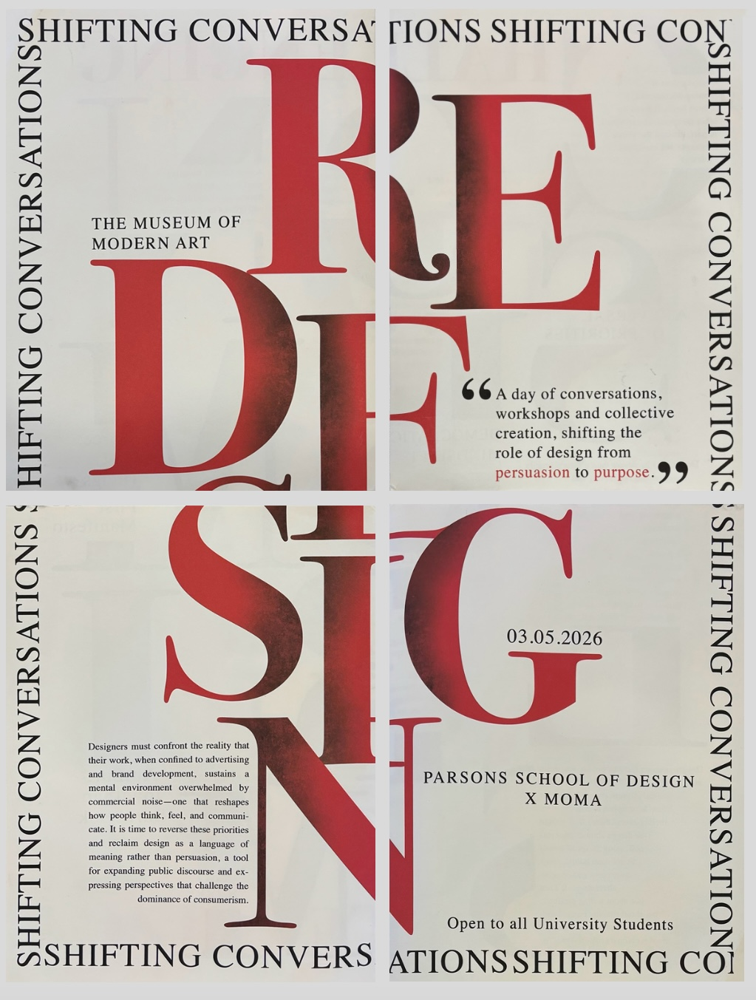
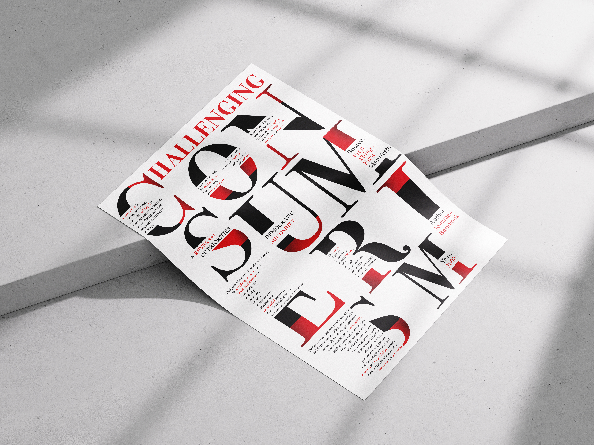
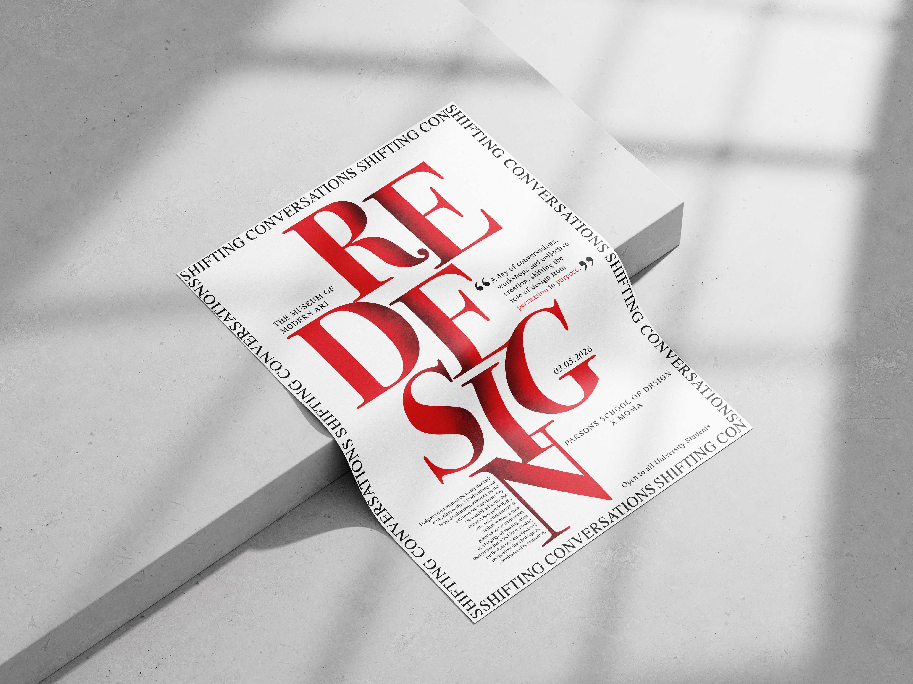
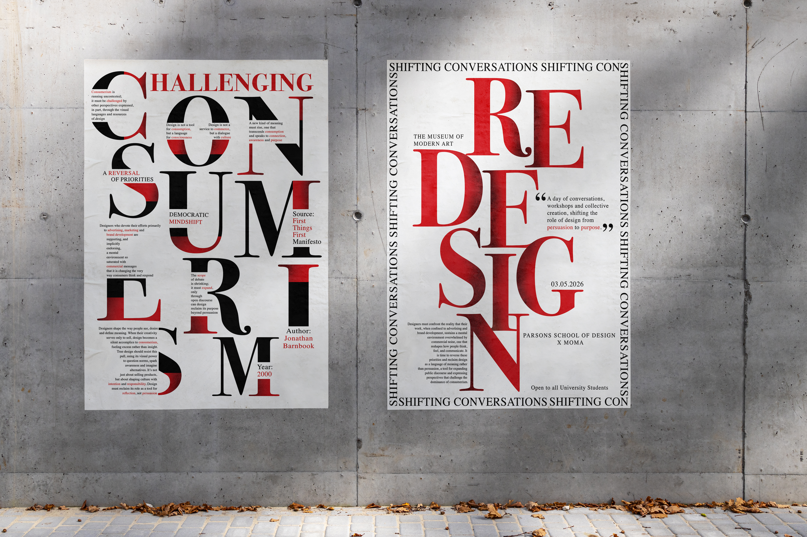

Manifesto Poster
This is a manifesto poster inspired by the First Things First manifesto by Jonathan Barnbrook. The work challenges consumerism and questions the role of design beyond advertising and persuasion. The poster invites audiences to slow down, reflect and reconsider design as a tool for dialogue, awareness and cultural responsibility rather than pure consumption.

Concept
This manifesto poster came from my urge to question how design often prioritizes consumption over meaning. I broke and split the typography to disrupt easy reading, encouraging the viewer to pause and consider the responsibility behind what design communicates. The restrained black and white palette keeps the focus on the message, while moments of red act as interruptions, highlighting resistance and urgency.
Initial Drafts
Event Poster
This event poster acts as a continuation of the manifesto, carrying its ideas into a collaborative setting.
Re:Design: Shifting Conversations is a day-long collaborative manifesto event at MoMA, created in collaboration with Parsons School of Design. The event moves away from polished outcomes and instead opens up space for conversations around ethics, responsibility and purpose-driven creativity. The poster folds into a pamphlet, allowing the message to unfold gradually, thus encouraging reflection and dialogue beyond commercial impact.

Initial Drafts
Printed Pamphlet
The event poster was adapted into a printed pamphlet designed to be handed out to the audience during the event. The layout was divided into panels with carefully planned folds to maintain typographic alignment, turning the poster into a tactile take-away that extends the manifesto beyond the wall.

Mockups



Reflection
This project pushed me to slow down and question what I want my design to stand for. Creating both the manifesto and the event poster helped me understand how a single idea can shift across formats while still retaining its core voice. By working only with type and carefully disrupting it, I learned how form, restraint and intention can carry meaning just as strongly as imagery. More than an outcome, this manifesto became a reflection of how I want to design, with purpose, responsibility and care.